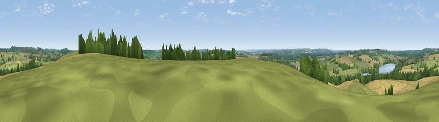

Viewpoint near Aston le Walls
#18497 in England · top 20% of its area beats it · near Aston le WallsWhere it is
The exact computed spot (SP 50525 52025). Click the marker for map links.
The view, rendered

A 360° render of this exact spot computed from the terrain model, tree cover and land cover — summer colours, afternoon light, calibrated against photographs of famous viewpoints. Real trees, hedges and buildings will differ in detail.
The panorama
Grey silhouette: terrain skyline in each direction (720 bearings, Earth curvature and refraction included). Dashed green: skyline with trees (+15 m) and buildings (+8 m) as obstacles. Blue strip: how far the ground is visible on each bearing.
Where the view opens
Wedge length = distance to the farthest visible ground on that bearing (vegetation-aware). Rings at 10, 25 and 50 km.
What fills the view
42% grassland · 42% cropland · 11% woodland · 3% water · 1% built-up
Angular shares of the visible panorama (visual magnitude), not map area. Landscape diversity 0.49 (0–1 Shannon).
Key numbers
More beautiful places nearby
The staircase of upgrades: each row has a higher view potential than everything closer. Driving times are estimates from straight-line distance, calibrated against real road routing — check an actual route before setting out.
| Place | Direction | Drive | Score |
|---|---|---|---|
| Black Down | N · 4 km | ~10 min | 64.5 |
| Big Hill - Staverton Clump | NNE · 10 km | ~20 min | 68.4 |
| Viewpoint near Northend | W · 10 km | ~20 min | 70.3 |
| Viewpoint near Radway | WSW · 13 km | ~24 min | 71.7 |
| Viewpoint near Ilmington | WSW · 31 km | ~49 min | 72.6 |
| Viewpoint near Meon Vale | W · 34 km | ~51 min | 77.0 |
| Broadway Hill | WSW · 42 km | ~62 min | 77.7 |
| Viewpoint near Elmley Castle | WSW · 54 km | ~76 min | 80.5 |
52.16419, -1.26275 · source: screening · position refined by local search. Computed location — check access rights before visiting.